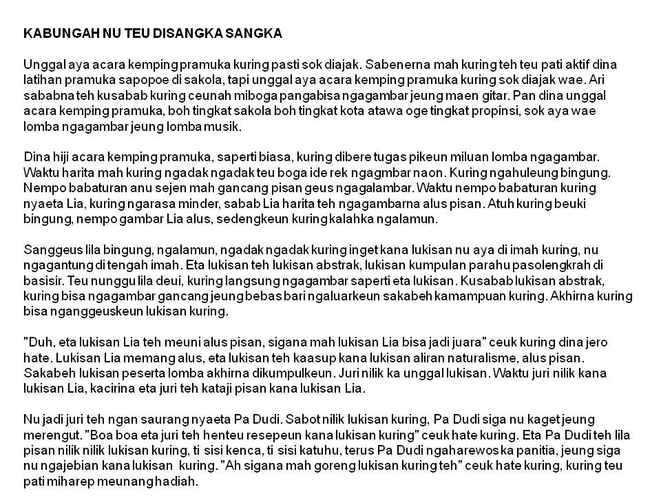

Bab-2: Materi Carpon
Sobat Mediapintar.com, Sampurasun! Carpon merupakan abreviasi dr carita pondok. Asalnya dr bahasa Inggris, short story. Dalam bahasa Indonesia disebut kisah pendek atau disingkat cerpen.
Sampai kini carpon masih tetap terkenal. Banyak pengarang yg menulis carita pondok, media-media pula banyak yg menerbitkannya. Masyarakat pun banyak suka membacanya.
Carpon merupakan karya sastra yg menggambarkan kehidupan, dilema sosial, & cita-cita orang Sunda. Dengan sering membaca carita pondok, kita dapat mengenali kehirupan penduduk Sunda.
Pengertian Carpon
Carpon merupakan singkatan dari carita pondok, dalam bahasa Indonesia disebut cerita pendek. Disebut pendek karena ceritanya terbilang singkat.
Ada yang mengatakan panjangnya antara 5.000 sampai 10.000 kata. Ada juga yang mengatakan ceritanya dapat selesai dibaca dalam hitungan menit atau selesai dalam sekali duduk.
Karena ceritanya pendek, maka carpon hanya menceritakan kejadian tunggal. Biasanya dalam satu waktu dan satu tempat. Konfliknya sederhana dan tidak bercabang. Pelakunya tidak banyak, terkadang akhir ceritanya digantung, tidak tamat seperti novel.
Dalam carita pondok biasanya loba pulunganeun (banyak pelajaran yang bisa dipetik). Tulisannya berbentuk prosa, agar lebih menarik biasa ditambah paguneman (dialog) dan gaya bahasa. Isinya menggambarkan kehidupan sehari-hari.
Unsur-unsur Carpon
- Tema
- Palaku (Tokoh) Jeung Watek
- Latar/Setting
- Puser Sawangan (Point Of View)
- Galur (Plot)
- Amanat
Tema merupakan pokok cerita yang menjiwai cerita dari awal sampai akhir. Tema carpon biasanya tentang masalah keluarga, masalah sosial, kaagamaan, atau masalah pendidikan.
Palaku yaitu orang atau tokoh-tokoh yang ada dalam cerita. Tokoh cerita terbagi menjadi pelaku utama dan pelaku tambahan. Masing-masing tokoh mempunyai sifat atau karakter.
Latar atau setting meliputi tempat dan waktu kejadian serta suasana. Unsur latar ini penting karena sangat mempengaruhi alur cerita.
Puser sawangan, point of view atau sudut pandang adalah cara pengarang melihat seluruh cerita yang dikarangnya. Apakah pandangannya oleh pengarang sendiri atau melalui seorang tokoh dalam cerita.
Galur, plot atau alur yaitu jalan carita. Galur carpon antara lain alur maju, mobog tengah, dan alur mundur. Alu maju ceritanya ngaruntuy dari awal hingga akhir. Mobok tengah menceritakan dari tengah-tengah dulu terus ke awal lalu ke akhir. Alur mundur menceritakan dari akhir, ke tengah, lalu ke awal.
Amanat adalah pesan (pesen, piwejang atawa piwuruk) yang ingin disampaikan oleh pengarang kepada pembaca carita pondok.
Tips Menulis Carpon
Menulis carita pondok itu sulit jika hanya dibayangkan. Jadi agar tidak sulit, jangan cuma dibayangkan. Berikut ini beberapa tips belajar menulis carita pondok.
- Segera tuliskan setiap mengalami kejadian menarik atau berkesan.
- Jangan dulu memikirkan bagus atau jeleknya, yang penting menulis saja dulu.
- Upayakan setiap hari menulis. Tuliskan kejadian apa saja yang dialami, tidak peduli seru atau tidak.
- Mulai menulis satu paragraf dulu dengan unsur-unsur yang lengkap. Kalau sering nanti juga dapat menulis cerita lebih panjang.
- Unsur-unsur tadi dijelaskan lagi dalam paragraf-paragraf selanjutnya.
- Cerita akan menjadi panjang tetapi tidak boleh keluar dari tema.
- Buat rangkay (kerangka) karangan berupa urutan kejadian agar isinya tidak keluar dari tema.
- Dari kerangka karangan kembangkan menjadi cerita lebih panjang dari kerangka karangan.
- Selingi antara tokoh jeung tokoh.
Mencari Inspirasi Cerita
Ide cerita dapat diperoleh dari mana saja, di antaranya dari tiga hal berikut ini.
- Tina Lalaguan (Dari Lagu)
- Tina Catetan Poean (Pada Catatan Harian)
- Tina kajadian sapopoé anu kaalaman ku sorangan atawa ku babaturan (dari kejadian sehari-hari)
Lagu biasanya menceritakan kejadian dengan kalimat yang sangat ringkas. Cerita dari lagu bisa dikembangkan menjadi carita pondok dan ditambah dialog biar tambah menarik.
Catatan harian yang biasa ditulis setiap hari juga bisa dijadikan inspirasi dalam menentukan cerita pendek. Agar lebih menarik, ceritanya ditambah imajinasi dan dialog.
Carita pondok dapat dibuat dari kejadian sehari-hari, baik kejadian yang dialami sendiri atau dialami oleh teman.
Jika menceritakan kejadian yang dialami teman, jangan menuliskan nama sebenarnya, nanti dia marah. Ceritanya pun dapat ditambah imajinasi karena carpon merupakan cerita fiksi atau rekaan.
Tips Baca Carpon
Lentong jeung ucapannana sing merenah, upamana kumaha lentong dina ngucapkeun kalimah tanya, kalimah warta, kalimah parentah, jeung sajabana. Kitu deui dina ngucapkeun sora vokal é, jeung e. Leuwih alus mun dibarengan ku riuk beungeut, pasemon, jeung gerak awak anu luyu jeung eusi carpon.
Contoh Carpon:
Mungkin sekian saja untuk materi carpon hari ini. Belajar yang rajin ya supaya kamu menjadi orang yang sukses dimasa depan yang akan datang. Jangan lupa Berlangganan yaa Sobat Mediapintar.com
Nah, kalau kamu ingin lebih banyak tahu Carpon lagi? Yuk, bergabung di Mediapintar.com, kamu bisa belajar banyak hal di sana dan menjadi peneliti hebat, lho!.